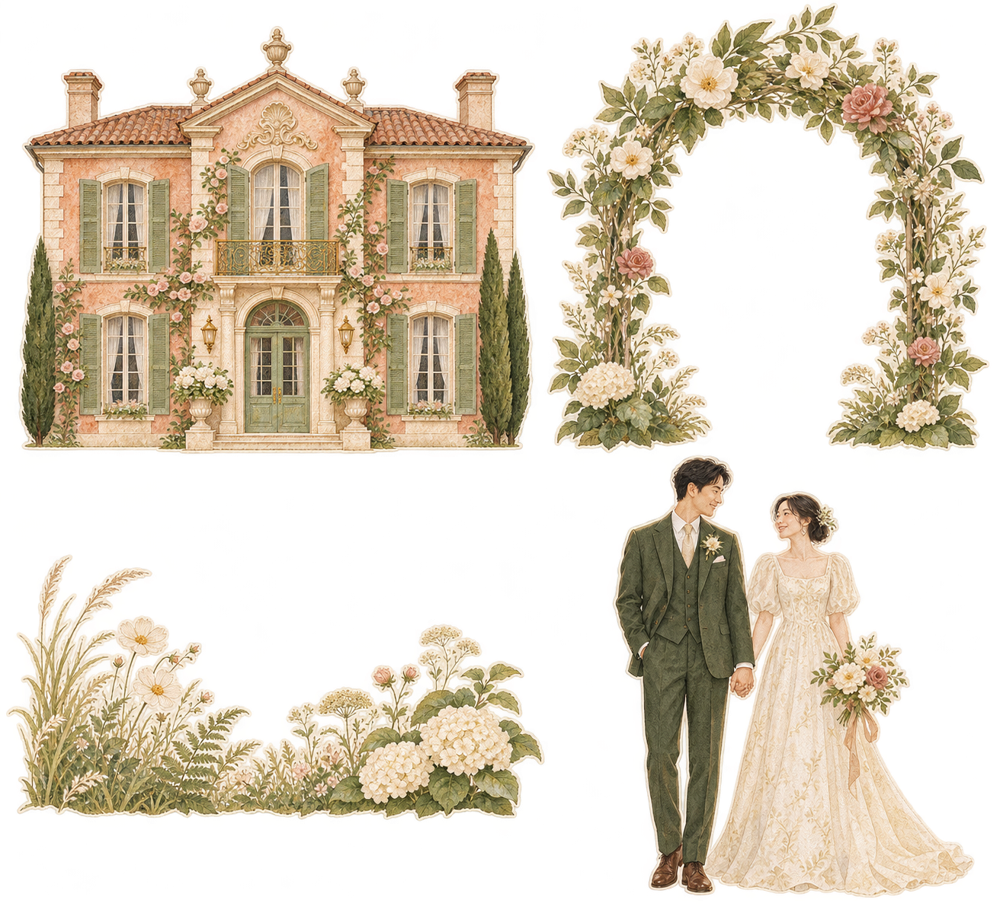

目前有建筑、新人和花草的基本层次。与选定参考相比，画面偏浅、素材偏碎，书体和连续地景不足。开书穿插与手机裁切需要先处理。
完整检查记录与下一版制作规格 ↗ · 点击图片查看原尺寸。

生成更高清的图片，无法补上书脊、纸边、机关、植物开窗和连续地景。素材与空间搭建需要同时调整。
上一轮提示词强调了奶油色、浅陶土、柔和粉、精细花朵。对参考中的鲜明轮廓、深绿色块、局部水彩渗色和纸层结构约束不足。
下一版先确认完整第一幕构图，再生成独立的建筑、树篱、近景植物与人物。四宫格图集不再承担确定整幕风格的任务。
以下八张参考全部来自项目已有本地收藏。本页未重新抓取远程图片。
① 修相机裁切与开合穿插。② 补书脊、纸层和连贯地景。③ 用 P01/P04/P05 重新确定完整构图。④ 生成独立美术部件。⑤ 在手机尺寸下复验纸艺、阅读与动作。
建议画面：近景深绿叶片 → 中景新人和树篱 → 远景庄园，地面以水彩草地与小径连起来。各层有清楚切边、支撑和投影。